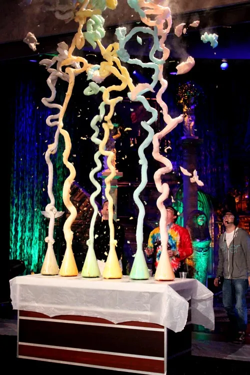
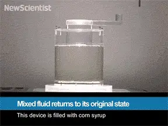
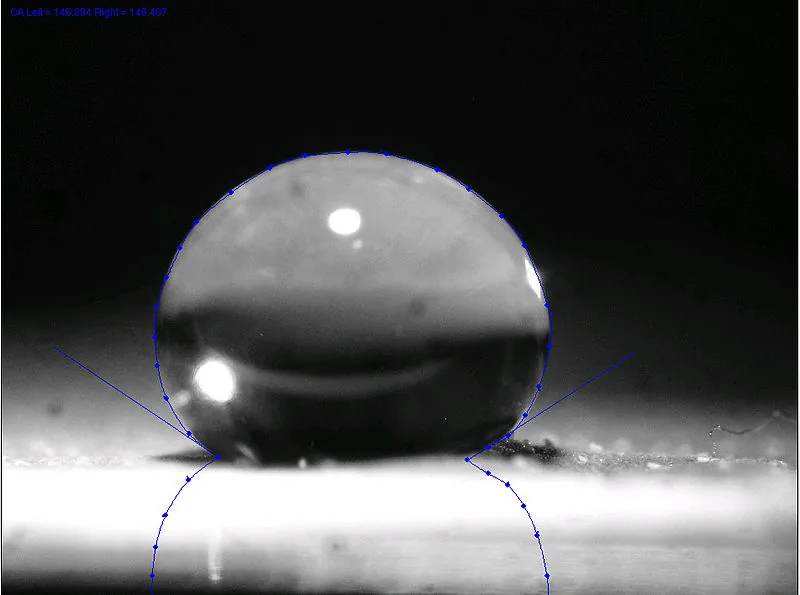

Blog · March 9, 2013
Awesome Science GIFs

Science is awesome.
Thanks to the spectacular determination of human minds to explore, understand and play with the world around us, we’re in an unprecedented age of scientific discovery.
With 1.57×10^6 scientific papers published each year, one doesn’t stand a chance of absorbing all relevant new knowledge and interestingness until we get better at information digestion tools. Makes me imagine scientists submitting an infographic of their research with every publication. I’d love that.
Speaking of things I love, here’s one: chemical reaction GIFs, one of mankind’s finest internet creations.
Thanks to Stanford, we know a bit about the biological benefit of being awestruck (experiencing awesomeness is good for the brain and body). The GIFs below give a jolt of awe — first because they’re novel and second because they entice one to ask ‘how does that work? why?’ and explore into a ‘random’ area of science, supplementing a new sense of ‘wow’ with a tidbit of knowledge. Useful? Perhaps not. Intellectually Invigorating? Definitely.
Foil Ship Floating
Foil ship floats in an aquarium of sulphur hexafluroide, a gas 6x denser than air. Here’s a cool deeper dive into sulphur hexafluoride sci from TEDxLondon (starts at 4:40).
Side note, breathing in sulphur hexafluoride lowers your voice to Bond villain status as Adam Savage of Mythbusters demonstrates:
Hot Nickel Ball vs Block of Ice
Mindfuck: Unmixing a Fluid
From New Scientist:
So how is this possible? When corn syrup – a viscous fluid – is mixed, friction dominates inertia and it maintains distinct layers when it flows. This behaviour can be predicted by its lowReynold’s number, a measure of how density, speed, and viscosity relate to each other. The phenomenon – called laminar flow – is exploited in many applications like ventilation systems and hydroelectric plants.

Sulfuric Acid on a Wet Sponge
Meissner Effect
Superconductors work as, when cooled to a certain point, they lose all electrical resistance. This near absolute zero temperature causes atoms to cease random vibrations, thereby allowing un-impeded flow for its electrons and a total loss of electrical resistance. The Meissner effect is a common property of these zero electrical resistant superconductors. It works because the magnet’s magnetic field cannot penetrate the superconductor, causing its lines of force to be expelled back at it. This has the effect of creating a mirror-image of the magnet within the superconductor and, through the expelled lines of force it is creating, causes itself to levitate.
Elephant Toothpaste
Hydrogen peroxide catalyzed by potassium iodide results in a foamy reaction as hydrogen peroxide decomoses rapidly into hydrogen and oxygen.

Water droplets on a superhydrophobic surface are close to spherical, allowing beads to glide off a surface with almost no surface friction.
GIFs curated from Chemical Reaction GIF Subreddit discovered via It’s Okay To Be Smart.
First published on my old blog, amyrobinson.wordpress.com, March 9, 2013.